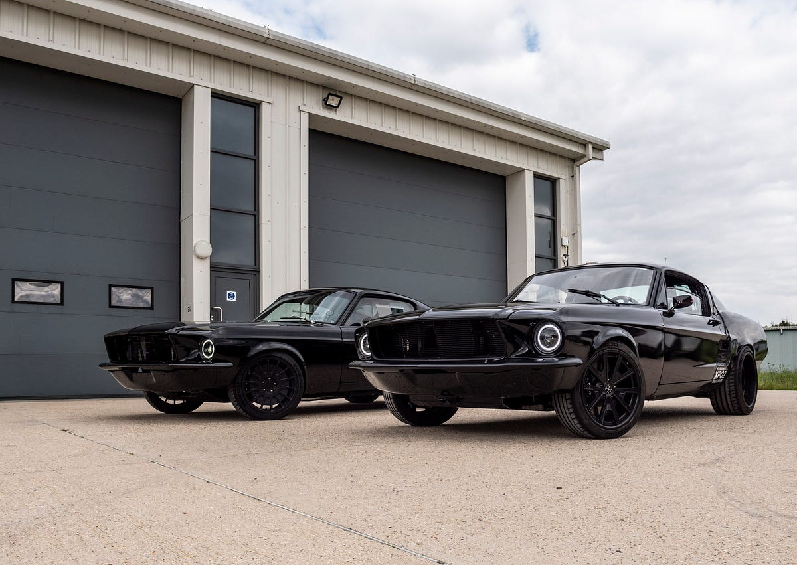
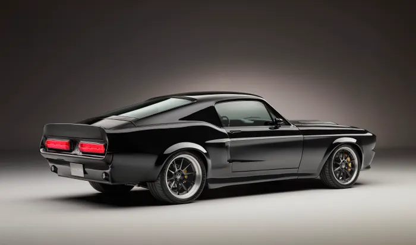

In the heart of America's automotive revolution, the 1960s Ford Mustang emerged as an iconic symbol of power, freedom, and style. Introduced in April 1964 at the New York World's Fair, this legendary pony car captured the imagination of a generation with its sleek design and exhilarating performance. With its distinctive long hood and short rear deck, the Mustang embodied the spirit of the era's youthful exuberance and desire for adventure. Available in coupe, convertible, and fastback variants, it offered something for every taste and lifestyle.
Under the hood, the Mustang boasted a range of potent engines, from the spirited inline-six to the legendary V8s, delivering thrilling acceleration and an unforgettable driving experience. The Mustang quickly became a cultural phenomenon, appearing in movies, television shows, and songs, solidifying its status as an American icon. Its success on the racetrack further cemented its reputation as a true performance machine.
Beyond its performance credentials, the Mustang also represented a shift in the automotive industry, pioneering the "pony car" segment and inspiring countless imitators. Today, the 1960s Ford Mustang remains a timeless classic, cherished by enthusiasts and collectors alike, a symbol of an era defined by innovation, style, and the open road.